Step by step Zenodo guide
Contents
Step by step Zenodo guide¶
This is an extract from the guidelines created by CLEX for contributions to their Zenodo Data Collection.
How to create a new Zenodo record¶
Here we will show step by step how to create a new record for your data in Zenodo. If your data is already published on another repository then you can probably reuse most of the information already provided.
Upload files¶
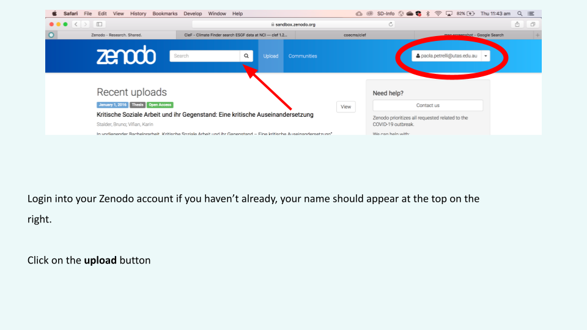

 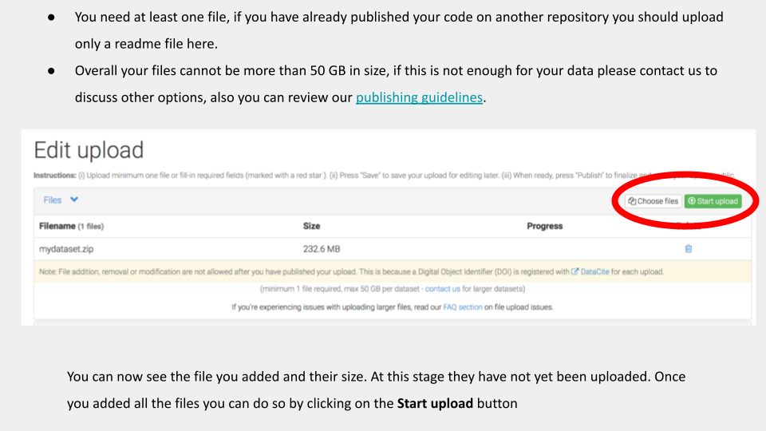
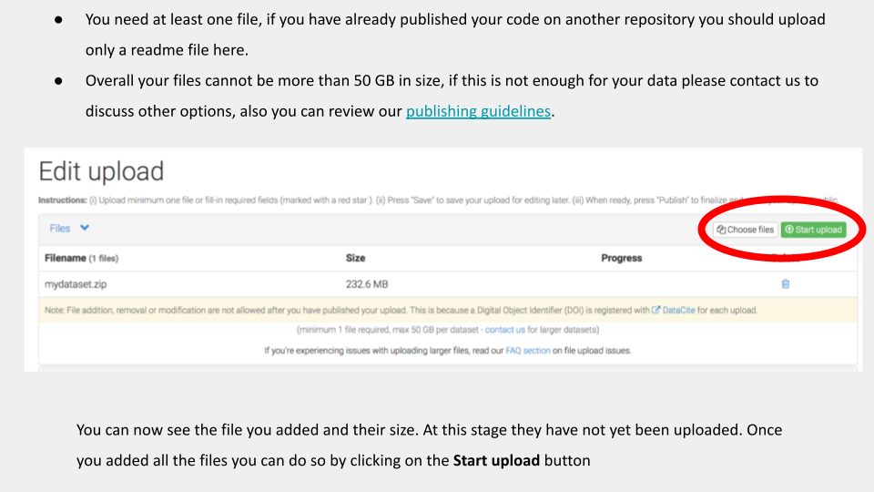
Choose a community¶

Upload type¶
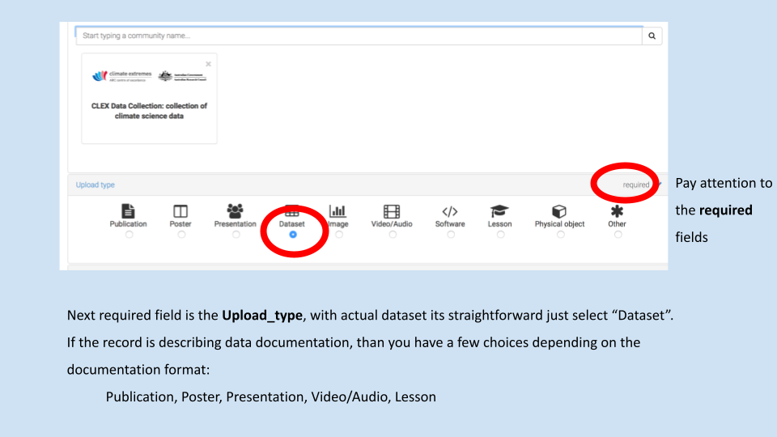
Basic information¶
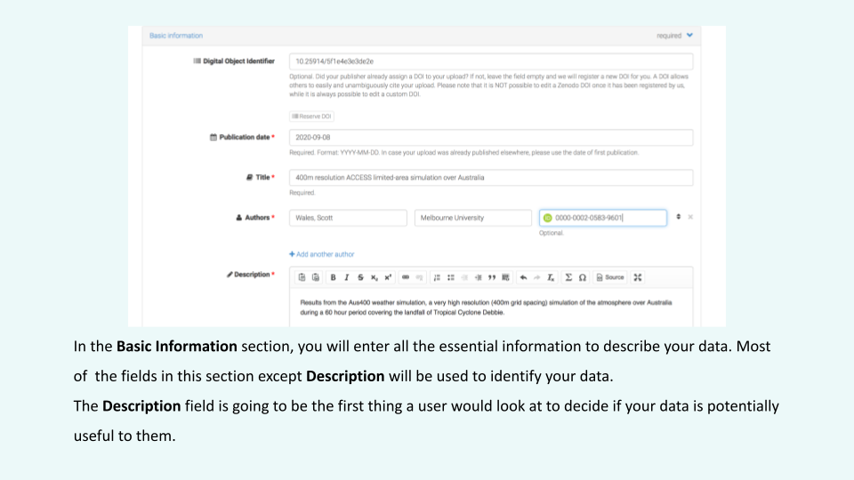
DOI¶
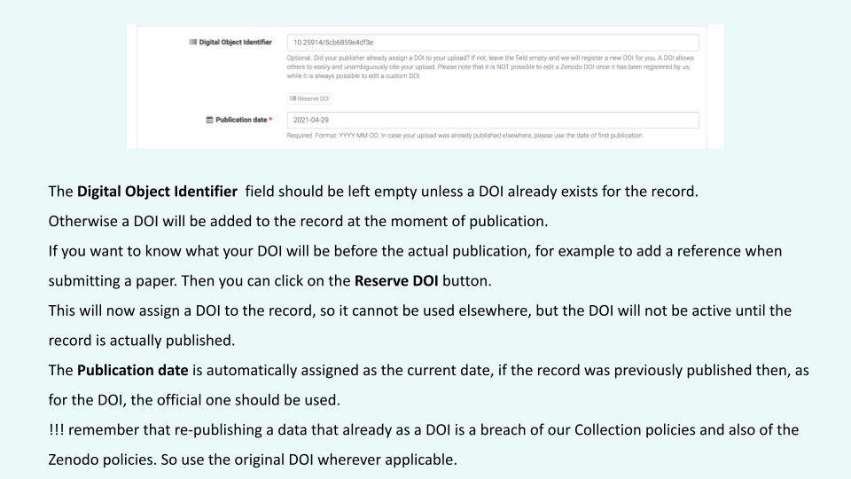
Title¶
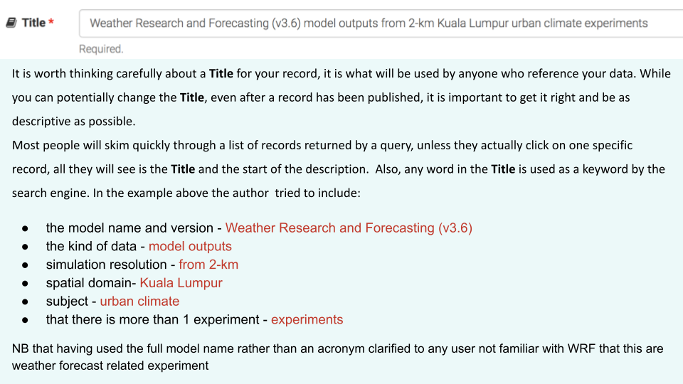
Authors¶
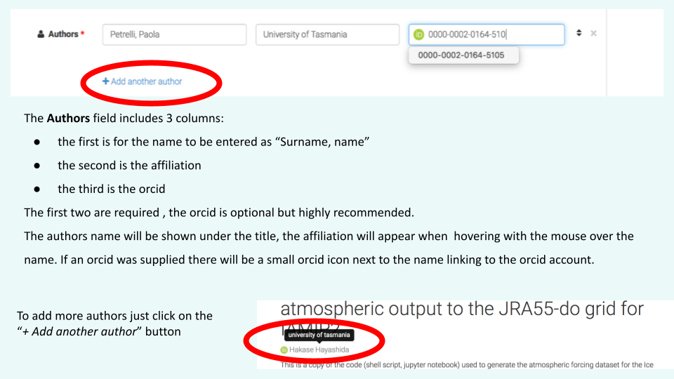
Description¶

Version¶
 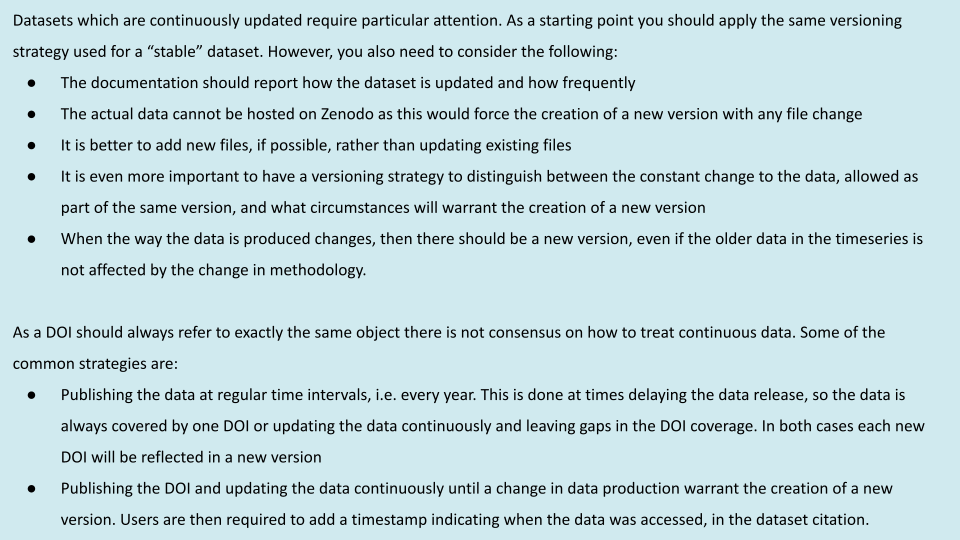
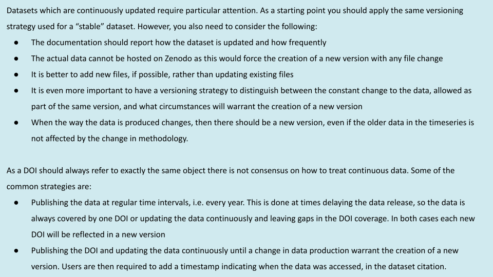
Keywords¶

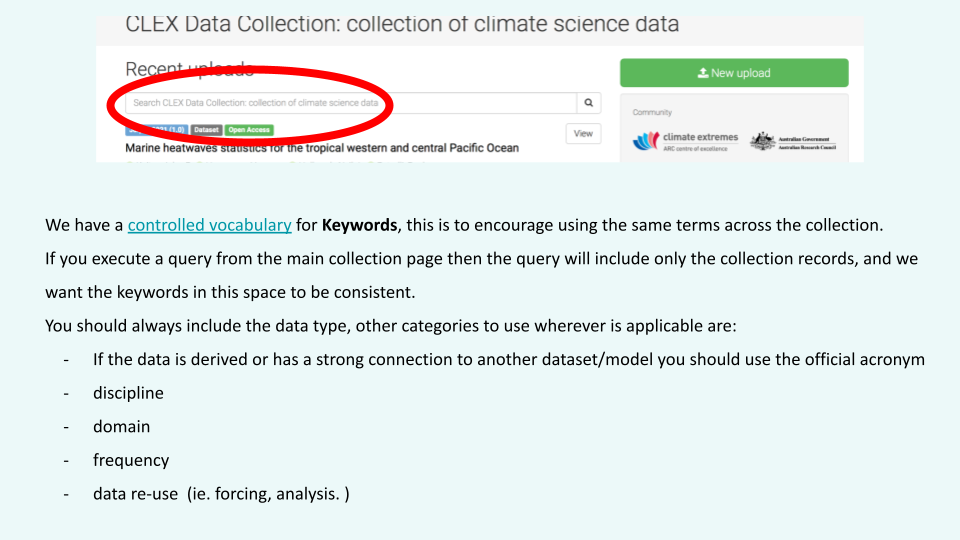
Additional notes¶

License¶

Funding¶

Related and/or alternate identifiers¶
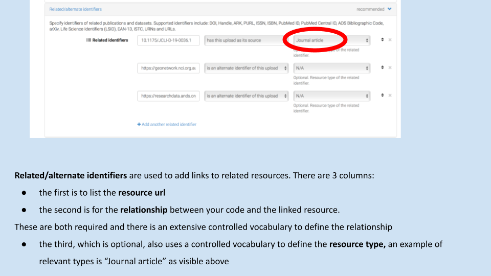
 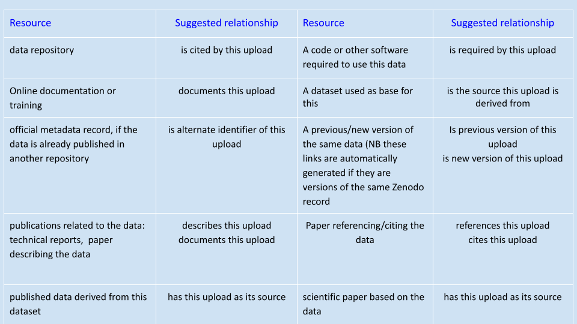
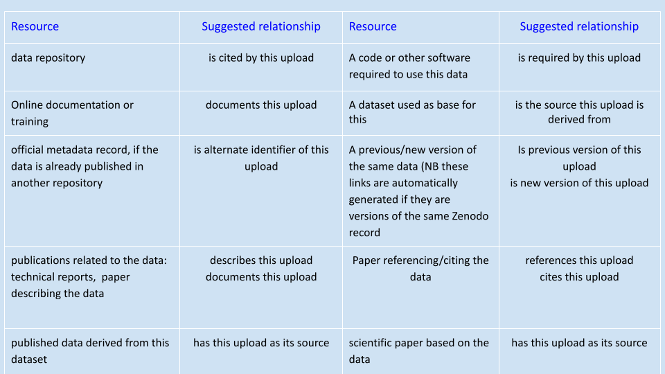
Contributors¶

Contact details¶
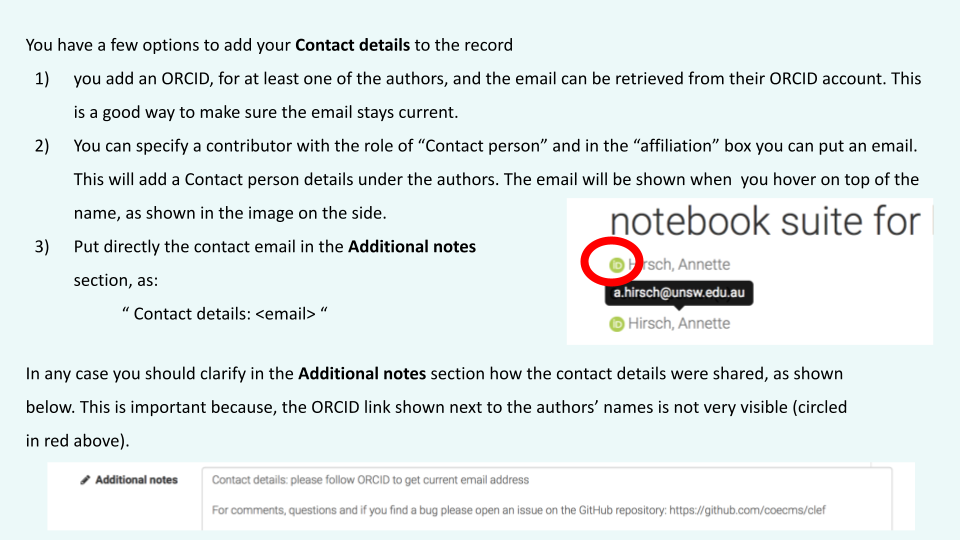
References and subjects¶

Publish¶
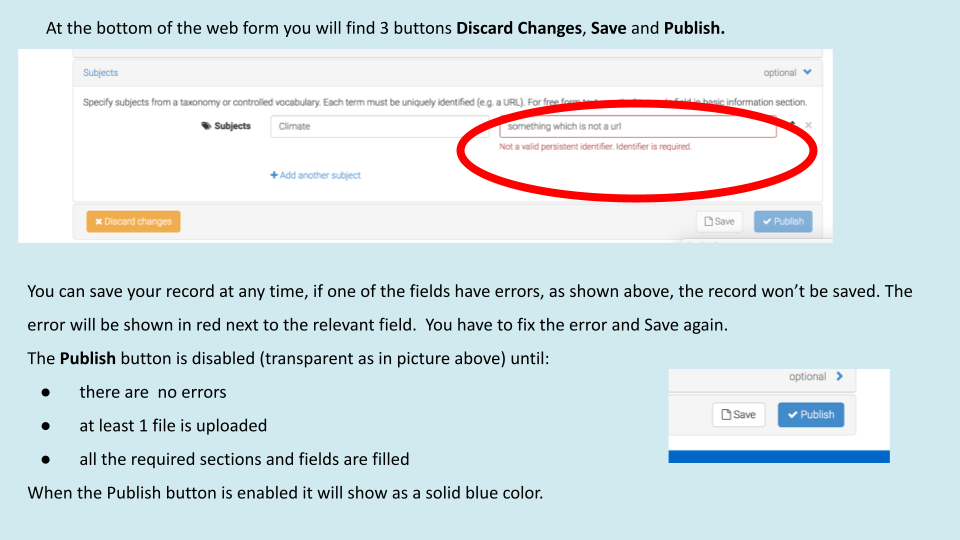
 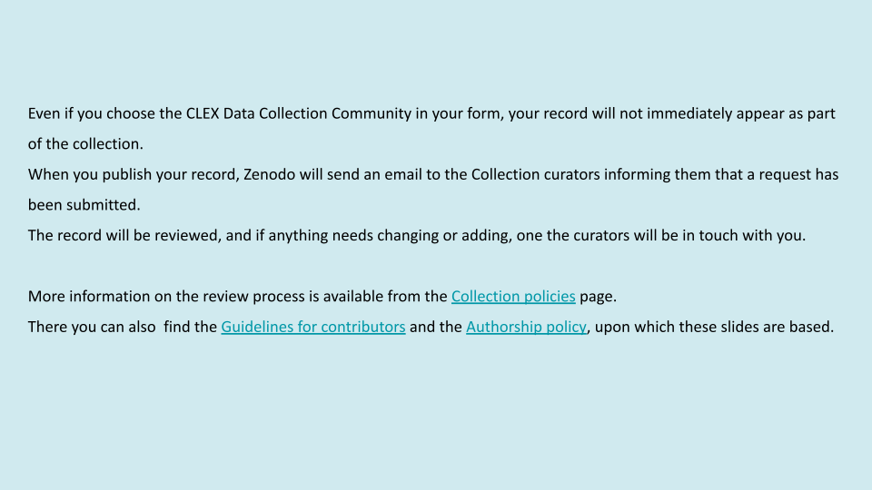
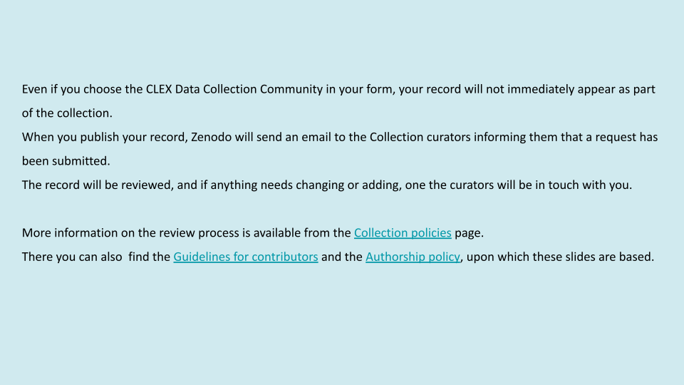